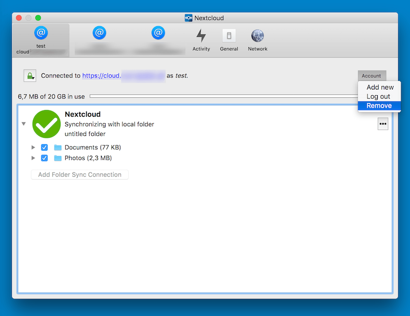
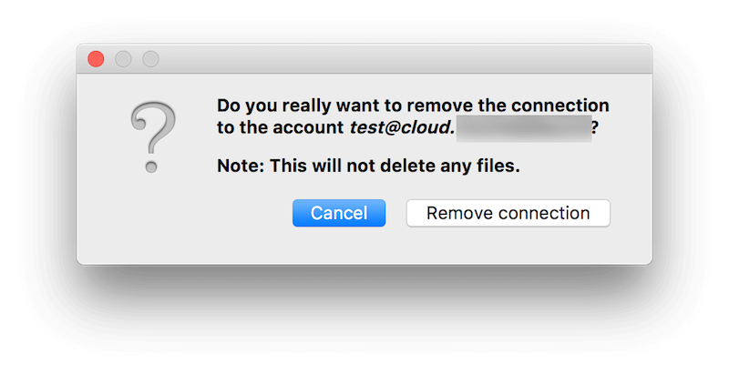
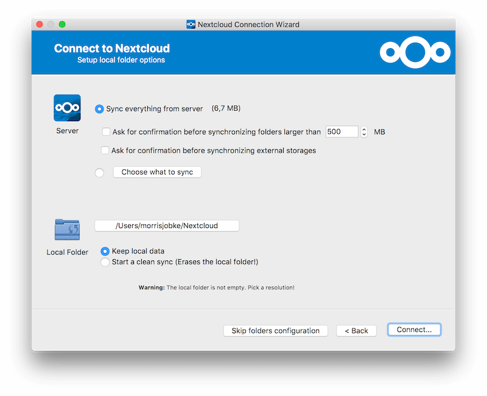

Частые вопросы
Как работает функция «Редактировать локально»
Эта функция зависит от того, сможет ли клиент для ПК зарегистрировать обработчик протокола nc://. Именно этот обработчик сервер использует, чтобы открыть файл локально. Благодаря ему клиент для ПК сможет открыть документ в локальном редакторе, когда на сервере Nextcloud будет выбрано «Редактировать локально».
Примечание
Если MIME-тип не зарегистрирован должным образом, то независимо от используемого браузера и дистрибутива клиент для ПК не сможет открыть документ в локальном редакторе при выборе «Редактировать локально» на сервере Nextcloud.
Браузер предупредит о сбое: «Не удалось запустить «nc://…», так как для схемы нет зарегистрированного обработчика».
Как это включить
Для этого в Windows нужно установить клиент для ПК с помощью установщика MSI, а в Linux — воспользоваться сторонней программой для интеграции AppImage в систему.
В Linux
Мы используем AppImage из-за его универсальной совместимости, но чтобы в полной мере пользоваться возможностями клиента для ПК, понадобится сторонняя программа для интеграции AppImage в систему. Мы проверили AppImageLauncher, а в качестве альтернативы есть Go AppImage.
В Windows
Установщик MSI изменит системный реестр, чтобы зарегистрировать обработчик протокола nc://.
Либо обработчик протокола nc:// можно зарегистрировать вручную:
Сохраните следующее содержимое в файл .reg:
Windows Registry Editor Version 5.00
[HKEY_CLASSES_ROOT\nc\shell\open\command]
@="\"C:\\Program Files\\Nextcloud\\nextcloud.exe\" \"%1\""
Дважды щёлкните файл .reg, чтобы импортировать его в реестр.
Дополнительные сведения: https://nextcloud.com/blog/nextcloud-office-release-solves-document-compatibility-overhauls-knowledge-management/
Некоторые файлы постоянно загружаются на сервер, даже если не изменялись
Возможно, дату изменения файла меняет другая программа. Если у файла расширение .eml, Windows автоматически и постоянно изменяет все такие файлы, пока вы не удалите \HKEY_LOCAL_MACHINE\SOFTWARE\Microsoft\Windows\CurrentVersion\PropertySystem\PropertyHandlers из реестра Windows. Подробнее: http://petersteier.wordpress.com/2011/10/22/windows-indexer-changes-modification-dates-of-eml-files/
Синхронизация останавливается при попытке синхронизировать вложенность глубже 100 подпапок
Клиент синхронизации намеренно ограничен глубиной не более 100 вложенных папок. Жёсткий предел нужен для защиты от ошибок с циклами, например с зацикленными символическими ссылками. Если глубоко вложенная папка исключена из синхронизации, она будет показана вместе с другими игнорируемыми файлами и папками на вкладке «Не синхронизировано» панели «События».
Появилось предупреждение о ненадёжном отслеживании изменений в синхронизируемых папках
Если в синхронизируемой папке в Linux очень много вложенных папок, операционная система может не выделить достаточно наблюдателей inotify для отслеживания изменений во всех них.
В этом случае клиент не сможет сразу запускать синхронизацию, когда файл в одной из неотслеживаемых папок изменится. Вместо этого он покажет предупреждение и будет вручную проверять папки на изменения через равные промежутки времени (по умолчанию каждые два часа).
Эту проблему можно решить, увеличив значение параметра sysctl fs.inotify.max_user_watches. Обычно это можно сделать либо временно:
echo 524288 > /proc/sys/fs/inotify/max_user_watches
или навсегда, изменив /etc/sysctl.conf.
Как переместить локальную папку синхронизации
В клиенте Nextcloud для ПК нельзя изменить локальную папку синхронизации. Однако это всё же можно сделать, хотя и не совсем обычным способом. Нужно сделать следующее:
Удалить существующее подключение, которое синхронизирует не ту папку
Добавить новое подключение, которое синхронизирует нужную папку


Для этого откройте раскрывающееся меню «Учётная запись» и нажмите «Удалить». Откроется диалоговое окно «Подтверждение удаления учётной записи».


Если вы уверены, нажмите «Удалить подключение».
Затем снова откройте раскрывающееся меню учётной записи и на этот раз нажмите «Добавить новую».


Откроется мастер подключения Nextcloud, но с дополнительным вариантом. Этот вариант позволяет либо сохранить существующие данные (синхронизированные предыдущим подключением), либо начать чистую синхронизацию (стерев существующие данные).
Важно
Будьте осторожны, выбирая вариант «Начать чистую синхронизацию». Старая папка синхронизации может содержать значительный объём данных — вплоть до гигабайт или терабайт. В таком случае после создания нового подключения клиенту придётся снова скачать все эти данные. Поэтому сначала переместите или скопируйте старую локальную папку синхронизации с существующими файлами в новое место. Затем при создании нового подключения выберите «сохранить существующие данные». Клиент Nextcloud проверит файлы во вновь добавленной папке синхронизации, обнаружит, что они совпадают с серверными, и ничего скачивать не будет.
Сделайте выбор и нажмите «Подключиться…». Затем откроется мастер подключения — как при настройке предыдущего подключения, — но теперь можно выбрать новую папку синхронизации.
Как изменить язык интерфейса
Для этого нужно изменить файл конфигурации nextcloud.cfg: в раздел General нужно добавить строку с нужным языком.
[General]
language=de